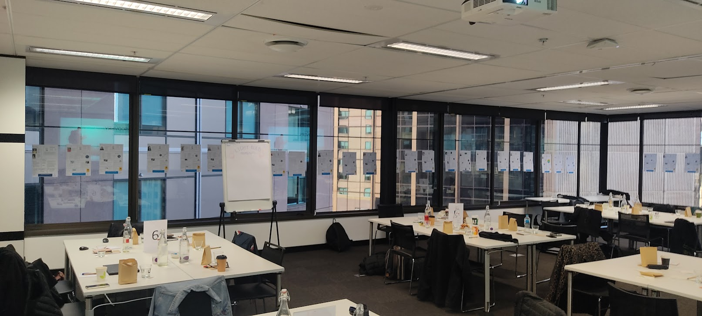

19 modules. Pay for what you use.
PortfolioInSite isn't a monolithic tool — it's a modular governance platform. Start with free MoSCoW scoring, add AI-assisted prioritisation, demand intake, dependency mapping, scenario modelling, and stakeholder voting as your needs evolve.
- M01 MoSCoW Scoring — free forever
- AI-Assisted Scoring with Claude API integration
- Scenario Modelling with what-if comparison
- Stakeholder Voting with Delphi consensus

17+ years of delivery, built into every module
PortfolioInSite wasn't designed in a vacuum. It's the product of 17 years leading enterprise delivery — across banking, automotive, telecommunications, and government. Every scoring weight, every health threshold, every governance workflow reflects real PMO operations.
- Enterprise-tested governance patterns
- Designed for PMOs, VMOs, and steering committees
- R&D-backed methodology development
- Australian owned and operated

From manual triage to autonomous prioritisation
Start with rule-based auto-scoring that applies your governance criteria consistently. Graduate to Claude API-powered scoring that learns your portfolio's patterns and surfaces recommendations with confidence thresholds — keeping humans in the loop where it matters.
- Rule-based auto-scoring (M05)
- Claude API scoring with confidence blending (M14)
- Auto-accept above 80% confidence
- PMO review below 60% confidence